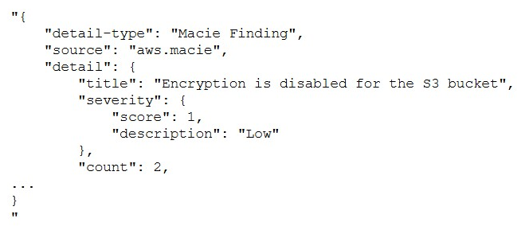
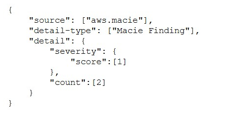
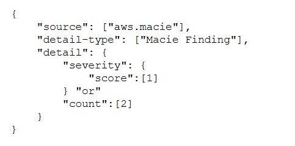
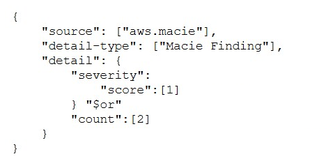
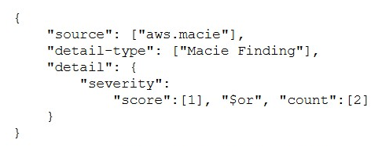

原文
この翻訳を評価してください
いただいたフィードバックは Google 翻訳の改善に役立てさせていただきます
ある企業は、Amazon EC2 インスタンス上で動作する非本番環境アプリケーションを運用しています。このインスタンスには Amazon EBS ボリュームが接続されています。インスタンスのヘルスチェックが失敗するたびに、CloudOps エンジニアはインスタンスを再起動することで問題を解決しています。CloudOps
エンジニアは、ヘルスチェック失敗後にインスタンスを再起動する自動化ソリューションを実装する必要があります。CloudOps エンジニアは、Amazon EventBridge 用のサービスリンク IAM ロールを作成しました。
自動化要件を満たすために、CloudOps エンジニアは次に何をすべきでしょうか？
コンプライアンスチームは、Amazon RDS DBインスタンスのすべての管理者パスワードを少なくとも年に1回変更することを要求しています。
この要件を最も運用効率の良い方法で満たすソリューションはどれですか？
ある企業は、複数のAWSアカウントを管理するためにAWS Organizationsを使用しています。企業ポリシーでは、顧客データの保存と処理には特定のAWSリージョンのみを使用することが義務付けられています。CloudOpsエンジニアは、社内の誰も許可されていないリージョンにAmazon EC2インスタンスをプロビジョニングできないようにする必要があります。
これらの要件を満たす、最も運用効率の高いソリューションは何でしょうか？
ある企業がAWS Organizations内の組織にAWSアカウントを保有しています。その企業は、あるアカウントにAWS Lambda関数を構築しました。このLambda関数は、別のアカウントで実行されているAmazon EC2インスタンスのリストを取得する必要があります。
このアクセスを最も安全に提供できるソリューションはどれでしょうか？
開発チームは、重大度スコアが1でカウントが2のAmazon Macie検出結果を探すAmazon EventBridgeルールを設定しています。
開発チームは次のイベントを受け取ります。





デフォルトの DHCP オプションが設定された VPC 内の Amazon EC2 インスタンスでアプリケーションが実行されています。このアプリケーションは、DNS 名 mssql.example.com を持つオンプレミスの Microsoft SQL Server データベースに接続します。アプリケーションはデータベースの DNS 名を解決できません。
この問題を解決するには、どのソリューションを使用すればよいでしょうか？
ある企業は、AWS Lambda関数を使用して、Amazon S3バケットへのユーザーアップロードを処理しています。このLambda関数は、Amazon S3のPutObjectイベントに応じて実行されます。CloudOps
エンジニアは、このLambda関数の監視を設定する必要があります。CloudOpsエンジニアは、関数がイベントの処理に10秒以上かかった場合に、Amazon SNSトピックを通じて通知を受け取りたいと考えています。
この要件を満たすソリューションはどれでしょうか？
ある企業が最近、貯蓄プランを導入しました。同社は、特定の日の利用率が90%を下回った場合にメール通知を受け取りたいと考えています。
この要件を満たすソリューションはどれでしょうか？
ある企業のeコマースアプリケーションは、Application Load Balancer (ALB) の背後にあるAmazon EC2インスタンス上で稼働しています。これらのインスタンスはAuto Scalingグループに属しています。顧客からは、ウェブサイトが時折ダウンするという報告があります。ウェブサイトがダウンすると、顧客のブラウザにHTTP 500 (サーバーエラー) ステータスメッセージが返されます。Auto
ScalingグループのヘルスチェックはEC2インスタンスの状態チェック用に構成されており、インスタンスは正常です。
この問題を解決するには、どのソリューションが有効でしょうか？
ある企業が新しいビデオオンデマンド（VOD）アプリケーションを開発しました。このアプリケーションは、Application Load Balancer（ALB）の背後にあるAmazon EC2インスタンス群上で動作します。同社はAmazon CloudFrontディストリビューションを設定し、ALBをオリジンとして設定しました。アプリケーションの需要増加に伴い、同社はすべてのビデオファイルを中央のAmazon S3バケットに移行したいと考えています。
クラウドオペレーションエンジニアは、同社がファイルをAmazon S3に移行した後も、エッジロケーションでビデオファイルをキャッシュできることを確認する必要があります。
この要件を満たすソリューションはどれでしょうか？